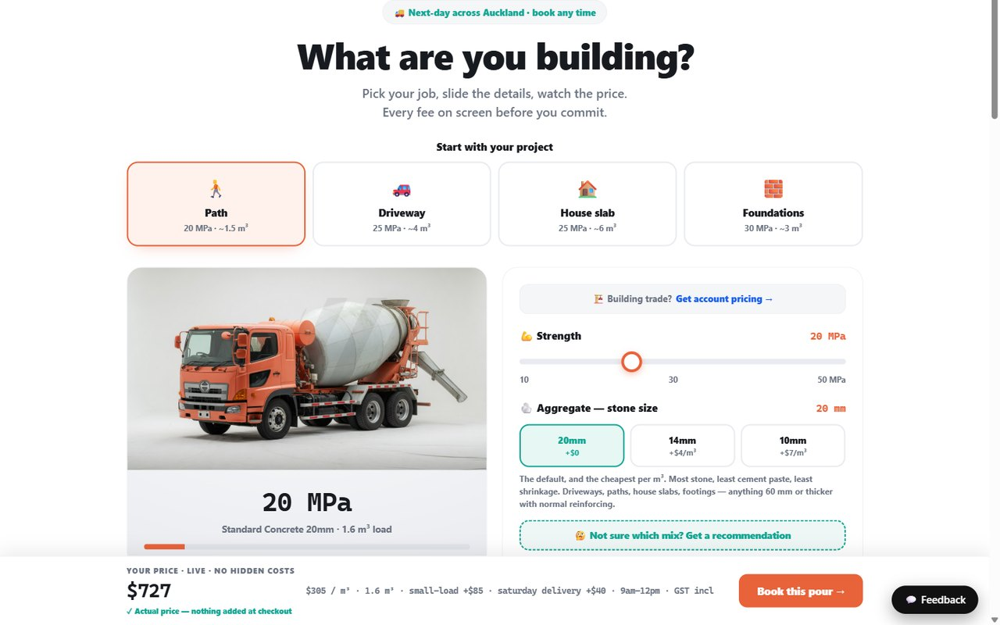

The problem
Every large NZ concrete supplier advertises "order online". None of them let you finish. You get a volume calculator, maybe an indicative number, and then a form that ends in someone ringing you back. The extras that actually move the price — colour, additives, slump, a Saturday pour, a site out past the usual radius — carry no visible price at all, and the delivery date is not confirmed until a human calls.
For a builder pricing a job on a Sunday night, that is a dead end. The competitive gap is not "show prices" — one competitor now does. It is that nobody lets a customer complete a real, fully priced, confirmed order.
Worth being precise about what is not being promised: ringing a customer about site access or a mix question is normal and often the right thing to do. The promise is narrower and harder — you never have to ring us to find out what it costs.
Constraints I set myself
- The quote is the order. If a number is shown, it is the number that gets charged. No "indicative", no "from".
- Every fee itemised. Delivery, small-load, split-load, out-of-area, weekend, deposit. A surprise line on the invoice destroys the whole proposition.
- Two audiences, one interface. A builder knows they want 25 MPa. A homeowner doing a driveway has no idea what MPa means and is the one a phone call intimidates.
- Machine-readable on purpose. Buyers increasingly ask an AI who delivers concrete next-day with online pricing. To be the answer, the prices have to be in plain text, marked up with schema.org.
What I built
Four self-contained HTML demos first, to put real directions in front of the client rather than describing them — deliberately throwaway, so no one got attached to code that existed to settle an argument. Once a direction was picked, the real platform went into Next.js: server-rendered for search and for AI crawlers, room to grow into payments, accounts and an admin side.
The centre of it is a quote engine: a pure function that takes a selection and returns a fully broken-down price, plus an admin surface for the rates behind it.
Decision 1 — one authoritative quote function, run on the server
The tempting shortcut is to compute the price in the browser as the customer clicks,
then post the total. That hands the price to the client — anyone can edit it, and worse,
the browser's number and the server's number drift apart the moment one of them changes.
Instead there is a single computeQuote that the UI calls for the live preview
and the server calls again, authoritatively, at booking time. Same code, same answer.
/** Authoritative quote. Call this on the server at booking time. */
export function computeQuote(s: Selection): Quote {
const est = estimateDistance(s.pc);
let perM3 = baseRate(s);
(s.addonList || []).forEach((id) => {
const a = ADDONS.find((x) => x.id === id);
if (a && a.kind === "perM3") perM3 += a.amount;
});
const billed = round2((s.vol || 0) * WASTE);
const concrete = perM3 * billed;
const delivery = DELIVERY.base + est.km * DELIVERY.perKm;
const total = concrete + delivery + flatAddons + smallLoad
+ splitLoad + outOfArea + slot;
const deposit = Math.max(100, Math.round(total * DEPOSIT_PCT));
return { perM3, billed, concrete, delivery, /* ... */ total, deposit };
}Excerpt — web/lib/engine.ts
Decision 2 — the breakdown is the product, not a disclosure
Note what the return type is. Not a total with the workings thrown away — every component survives: the per-cubic-metre rate, the billed volume after the waste allowance, the concrete subtotal, the distance-based delivery, each surcharge on its own line, and the deposit. That shape is deliberate. The competitor's number is a black box you have to phone about; if this one is going to be trusted instead, the customer has to be able to see exactly where it came from, and the UI can only show that if the engine keeps it.
It also makes the fees defensible rather than sneaky. A small-load fee looks like a rip-off when it appears at checkout, and looks entirely reasonable when it is named on the page next to the volume that triggered it.
Decision 3 — the waste allowance is applied, and admitted
You never order exactly the volume you calculated; some concrete is lost in the pour. Every supplier bills accordingly. Most bury it. Here the calculator does the maths, applies the allowance, and shows both numbers — what you measured and what you are billed for. The customer who was going to be annoyed about it is going to be far more annoyed discovering it afterwards.
Where it stands
Demos are done and have been shown. The pricing engine, the mix helper for people who do not know what they need, and the admin side are built; the ordering flow — payment, confirmed slots, order history — is the current work. Competitor research is written down rather than assumed, and is what killed the original "we show prices" wedge and replaced it with the sharper one.
What I would do differently
- Fewer demos, sooner. Four directions was one or two more than the decision actually needed. The client picked from the first two conversations; the rest was me enjoying myself.
- Move the rates into the database earlier. They started as constants in the engine, which is fast to write and wrong the first time a price changes without a deploy.
- Write the distance estimate against real depot data from day one. A postcode approximation is fine for a demo and not fine for a number you are contractually committing to.
Next case study